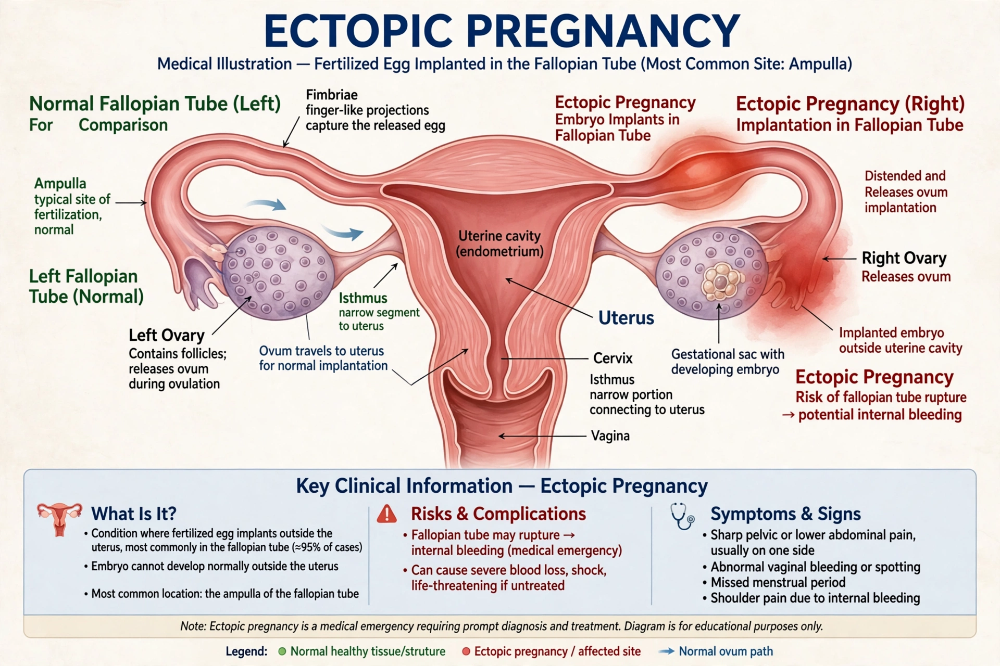

An ectopic pregnancy is a complication of pregnancy in which the embryo attaches outside the uterus. Most occur in a Fallopian tube (tubal pregnancy); others occur in the ovary, cervix, abdomen or caesarean scar. It occurs in about 1-2% of pregnancies and is potentially life-threatening.

| Symptoms | Pelvic pain, vaginal bleeding, shoulder pain, collapse if ruptured |
|---|---|
| Diagnosis | β-hCG, transvaginal ultrasound |
| Treatment | Methotrexate, salpingectomy / salpingostomy |
Risk factors include pelvic inflammatory disease, tubal surgery, prior ectopic, IVF, smoking and IUD in place. Classic presentation is amenorrhoea, abdominal pain and vaginal bleeding; rupture causes internal haemorrhage and shock.
Stable, unruptured cases with low β-hCG may be treated with methotrexate, which inhibits dihydrofolate reductase. Ruptured or unstable cases require emergency surgery, usually laparoscopic salpingectomy.